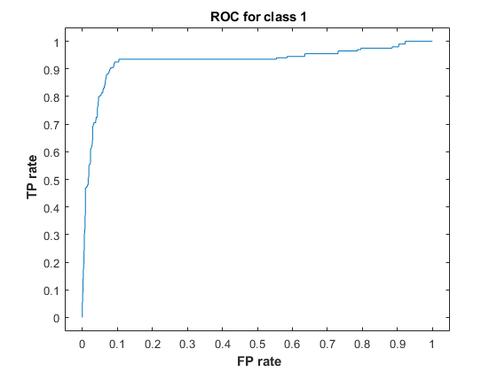

Trevor Tracy
Contents
a8.m
function a8
clear all, close all hidden
cd = readtable('ML_HW_Data_CellDNA.csv');
Y = cd(:,[14]);
tempTable = table2array(Y);
tempTable(tempTable~=0)=1;
Y = array2table(tempTable);
cdReg = cd;
cdReg(:, [1 2 3 4 5 6 7 8 9 10 11 12 13]) = ...
array2table(zscore(table2array(cd(:, [1 2 3 4 5 6 7 8 9 10 11 12 13]))));
cdReg(:, 14) = Y;
X = cdReg(:, [5 4]);
X = table2array(X);
Y = table2array(Y);
ContraintBox = 1;
RBF_SVM = fitcsvm(X, Y, 'BoxConstraint', ContraintBox, 'KernelFunction', 'RBF', 'KernelScale', 1);
gap = 0.01;
[x1Grid,x2Grid] = meshgrid(min(X(:,1)) : gap : max(X(:,1)), min(X(:,2)) : gap : max(X(:,2)));
xGrid = [x1Grid(:),x2Grid(:)];
x_cell = num2cell(X);
y_cell = num2cell(Y);
Plot2DDecisionBoundary(RBF_SVM, X, Y, xGrid, 'RBF SVM')
[predictClasses,proba] = predict(RBF_SVM, X);
CFM_Stats(Y, predictClasses)
[xpos, ypos, T, AUC0] = perfcurve(Y, proba(:, 1), 0);
figure, plot(xpos, ypos)
xlim([-0.05 1.05]), ylim([-0.05 1.05]), xlabel('\bf FP rate'), ylabel('\bf TP rate')
title('\bf ROC for class 0')
[xpos, ypos, T, AUC1] = perfcurve(Y, proba(:, 2), 1);
figure, plot(xpos, ypos)
xlim([-0.05 1.05]), ylim([-0.05 1.05]), xlabel('\bf FP rate'), ylabel('\bf TP rate')
title('\bf ROC for class 1')
return;
function Plot2DDecisionBoundary(model, X, Y, gridIn, plotTitle)
[yh, ~] = predict(model, gridIn);
gscatter(gridIn(:,1), gridIn(:,2), yh, 'cg'), hold on,
gscatter(X(:,1), X(:,2), Y, 'rb', '.', 10);
title(['\bf' plotTitle])
axis tight, drawnow
Confusion Matrix:
973 44
55 145
Overall accuracy = 0.91865
ans =
2×6 table
accuracy precision recall Fscore sensitivity specificity
________ _________ _______ _______ ___________ ___________
0.91865 0.9465 0.95674 0.95159 0.95674 0.725
0.91865 0.7672 0.725 0.7455 0.725 0.95674

